Peste 20 de ani de experiență medicală și peste 15 ani dedicați pacienților din Timișoara. Îmbinăm rigoarea profesională cu un mediu prietenos și fără durere.
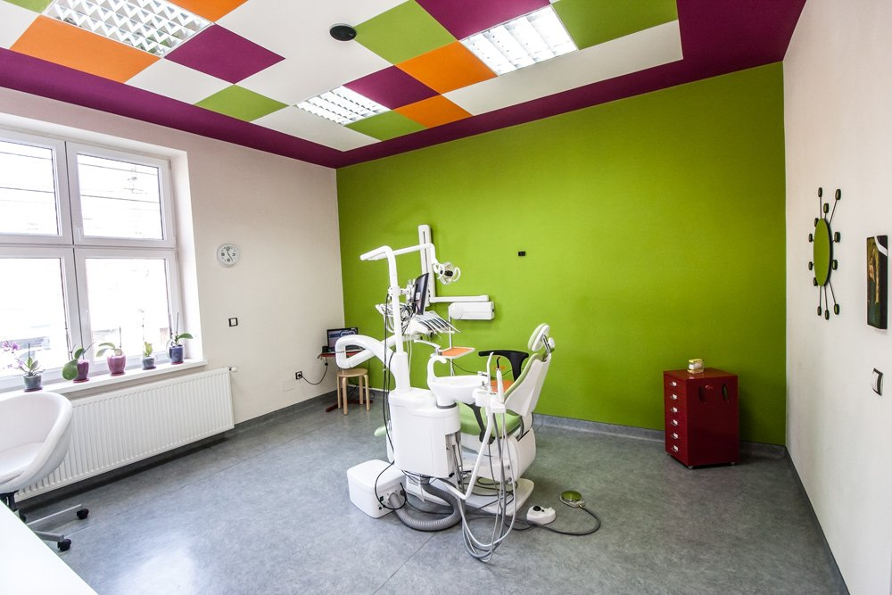
Societatea Borsa Praxis a luat ființă în luna mai 2003. Pe 13 martie 2011, am deschis cabinetul de medicină dentară din Timișoara pe Str. Ciprian Porumbescu, cu misiunea clară de a oferi tratamente stomatologice calde, oneste și durabile.
Menținerea integrității dinților este esențială pentru masticație, fonație și fizionomie. În cabinetul nostru, fiecare pacient beneficiază de un program complex de profilaxie și tratamente personalizate, într-un mediu steril de înaltă siguranță.
Colaborăm strâns pentru a acoperi toate ramurile stomatologiei moderne sub același acoperiș.
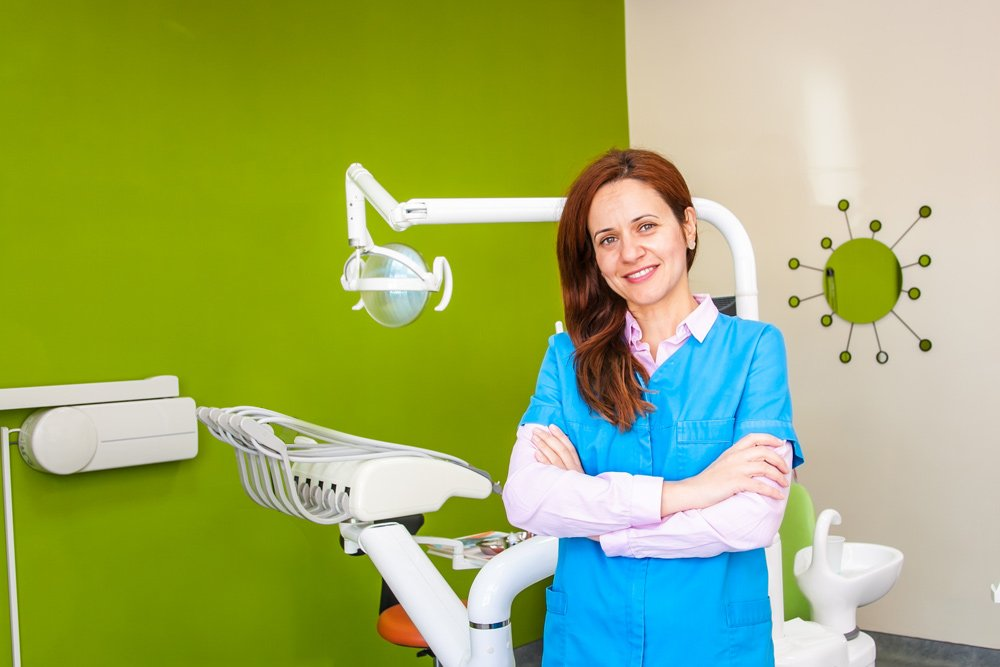
Specialist în medicină dentară cu experiență îndelungată în profilaxie, odontologie estetică și restaurări dentare. Cunoscută pentru blândețea tratamentelor și abordarea calmă cu pacienții anxioși.
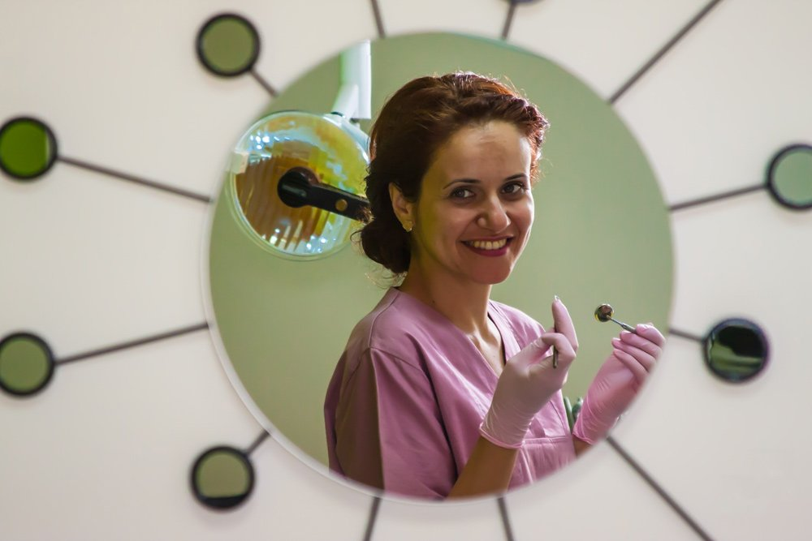
Medic specialist orientat către intervenții chirurgicale atraumatice, extracții de molari incluși, rezecții apicale și inserare precisă de implanturi din titan biocompatibil.
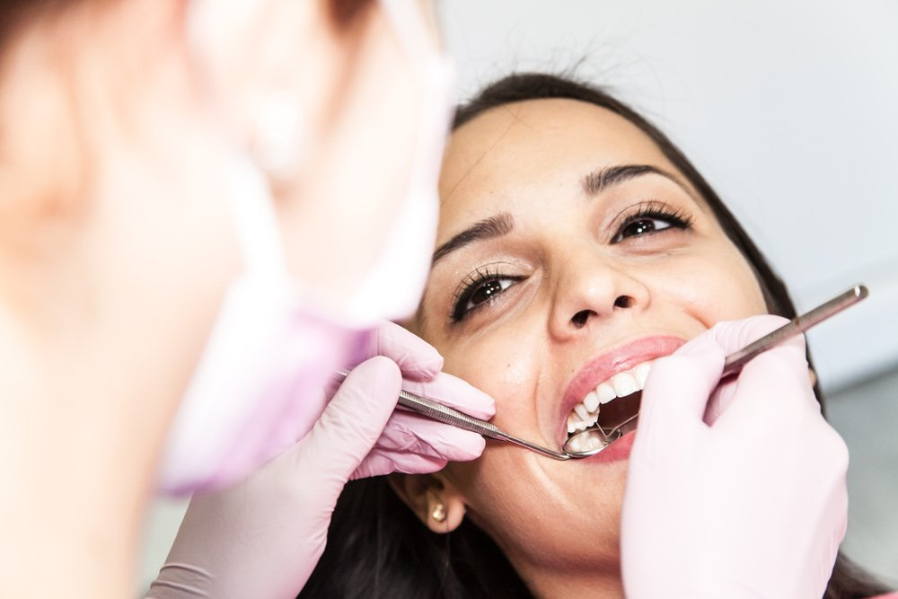
Dedicată alinierii dinților și corectării anomaliilor de ocluzie (mușcătură) la copii și adulți prin aparate dentare fixe metalice, ceramice și aparate mobile funcționale.
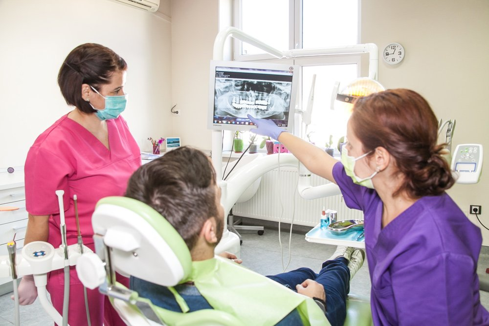
Experiență extinsă în reabilitări orale complexe, tratamente chirurgicale și reconstrucții protetice de mare acuratețe pentru recăpătarea masticației optime.
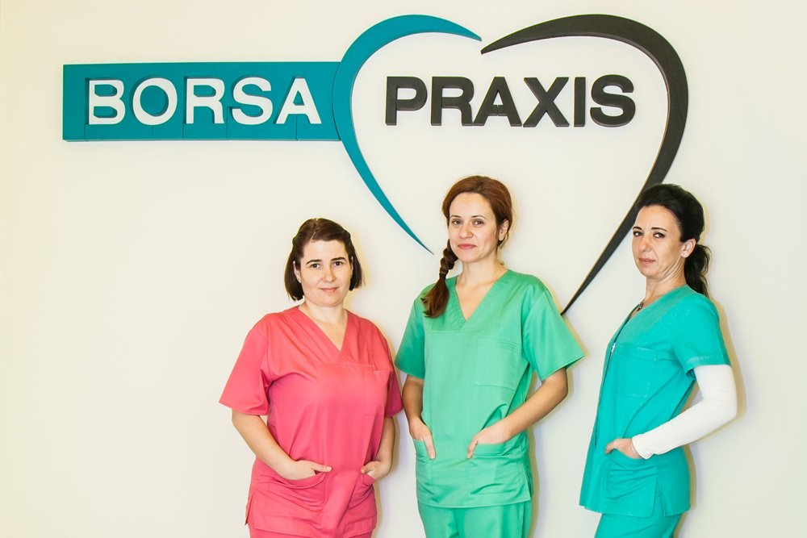
Asigură respectarea celor mai stricte protocoale de sterilizare și asistență medicală la scaun, creând un mediu confortabil și primitor pentru fiecare pacient.
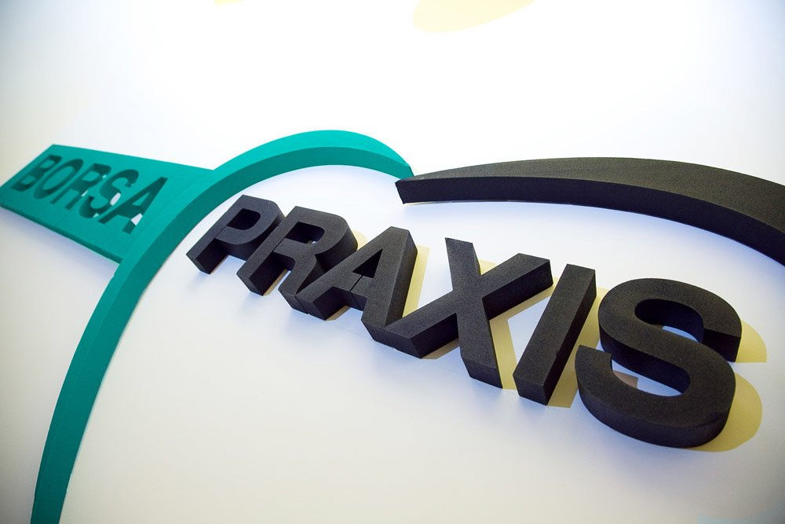
Consumabile de unică folosință, aparatură de radiologie digitală intraorală Carestream CS 2200 cu doze de radiație reduse cu 30% și dezinfectare la standarde înalte.
Apasă pe oricare imagine pentru vizualizare completă la rezoluție înaltă.
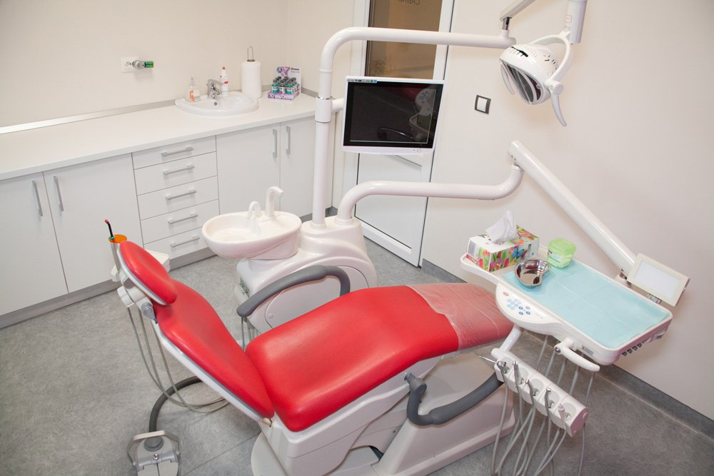
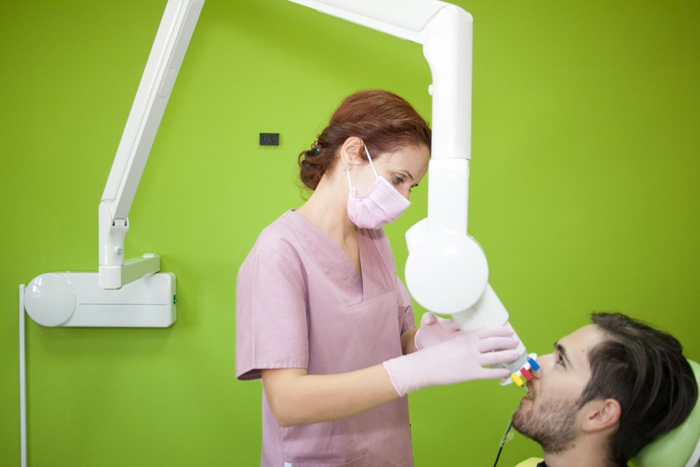
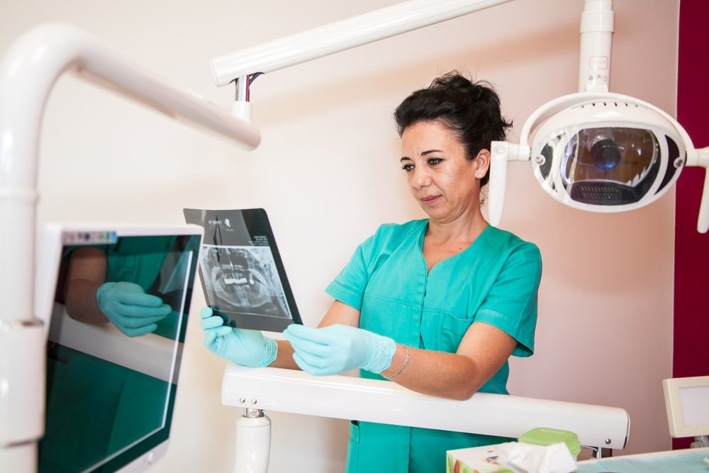
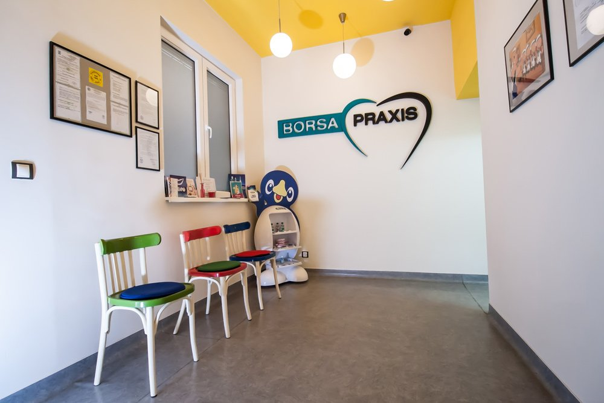
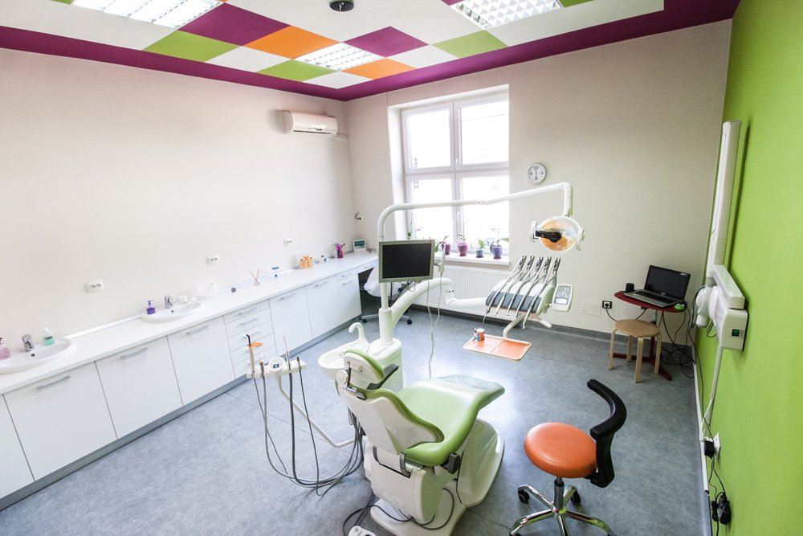
Programările sunt rapide și flexibile. Ne găsești pe Str. Ciprian Porumbescu Nr. 51 în Timișoara.